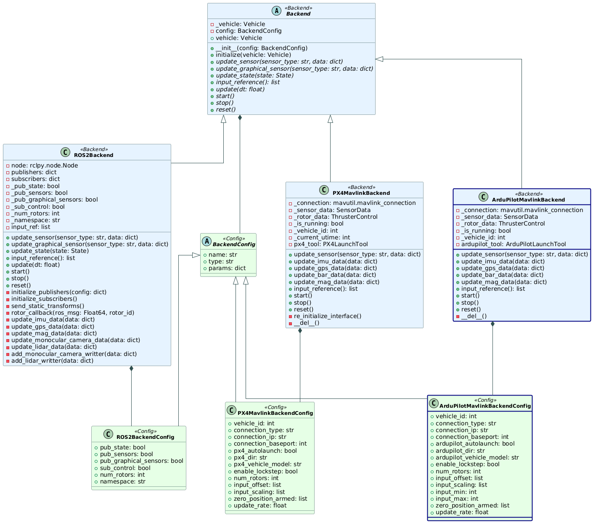

ArduPilot (Experimental)
The Ardupilot integration is an experimental feature that bridges the gap between the ArduPilot project and IsaacSim, allowing the ArduPilot community to leverage IsaacSim’s physics simulation and photorealistic rendering capabilities! This feature is tailored at researchers that use Ardupilot instead of PX4.
Note
This feature is highly experimental and was developed by the open-source contributor Tomer Tiplitsky in PegasusArduPilot, and merged into the main project.
To get PegasusSimulator and ArduPilot SITL talking, the open-source contributor Tomer Tiplitsky created a Python implementation of the custom protocol used between ArduPilot SITL and the simulator - called PyArduPilotPlugin. This project allows developers to create a custom simulator and integrate it with ArduPilot SITL control using Python!
Installing Ardupilot (Arducopter)
Ensure that you have the PegasusSimulator already installed. If you have not, follow the PegasusSimulator Installation steps, and then come back to this page.
Install the extra dependencies:
# Linux packages sudo apt install git make cmake python3-pip build-essential ccache g++ gawk wget valgrind screen python3-pexpect pkg-config libtool libxml2-dev libxslt1-dev xterm # Install this additional package to be able to see the window map and UI to interface with Ardupilot sudo apt-get install python3-wxgtk4.0 -y --no-install-recommends # Python packages pip install pymavlink MAVProxy kconfiglib jinja2 empy jsonschema pyros-genmsg packaging toml numpy future future lxml pymavlink pyserial geocoder empy==3.3.4 ptyprocess dronecan flake8 junitparser pygame intelhex --user
Clone Ardupilot into your home directory:
# Option 1: With HTTPS git clone https://github.com/ArduPilot/ardupilot.git # Option 2: With SSH (you need to setup a github account with ssh keys) git clone git@github.com:ArduPilot/ardupilot.git
Checkout to the stable version and compile the code for software-in-the-loop (SITL) mode:
# Go to the PX4 directory cd ardupilot # Checkout to the latest stable release git checkout ArduCopter-stable # Initiate all the submodules. Note this will download modules such as SITL-gazebo which we do not need # but this is the safest way to make sure that the PX4-Autopilot and its submodules are all checked out in # a stable and well tested release git submodule update --init --recursive # Generate the configuration for compilation ./waf configure --board MatekH743 # Compile the code ./waf copter # Go to the tools folder and run the python script to setup the simulation cd Tools/autotest # Run the script to setup the simulation python3 sim_vehicle.py -v copter --console --map -w
In the end, a white terminal should pop-up. Press Ctrl+C to exit and close the window.
Note
If you did not install ArduPilot at ~/ardupilot, you can also set your custom installation path inside the Pegasus Simulator GUI, or by editing the file PegasusSimulator/extensions/pegasus/simulator/config/config.yaml and setting the ardupilot_dir field to the correct path.
- This installation guide was based on the following resources:
Running a Simulation with Ardupilot (GUI Mode)
Open
ISAACSIM, either by using the Omniverse Launcher or the terminal command:ISAACSIM
Make sure the Pegasus Simulator Extension is enabled.

Select the appropriate control backend and drone model.

On the new terminal that was opened, run the following commands to perform a takeoff:
mode guided arm throttle takeoff 3
Drone spawn:
Drone takeoff:

Camera demo:

Ardupilot Integration Architecture
The Ardupilot integration is composed of two main components: the Ardupilot Mavlink Backend and the Ardupilot Mavlink Plugin. See the diagram below for a high-level overview of the architecture:
